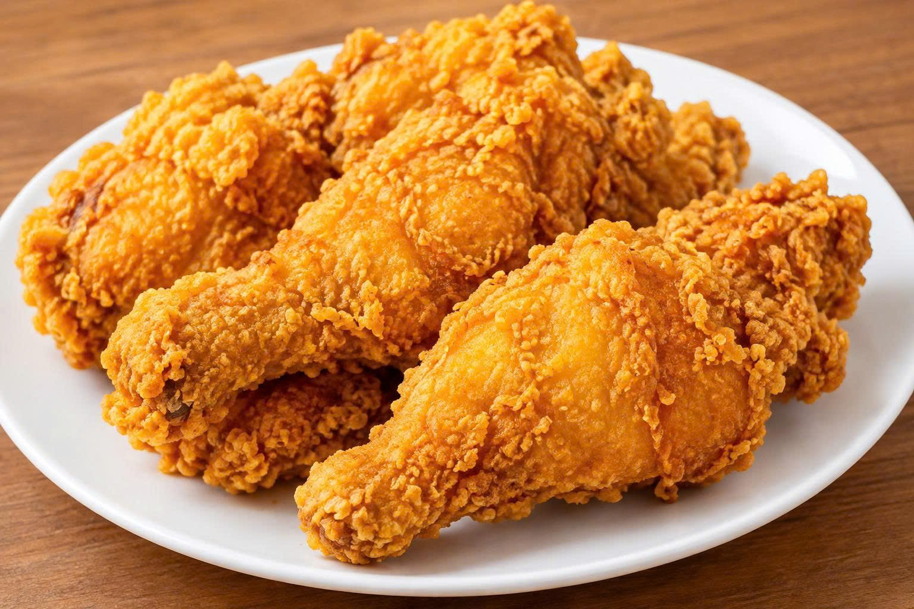

======= >>>>>>> 9b0d6e6e1de1e92c32b22c8a38f796badbba7cfa Thông tin chi tiết: Gà Rán Giòn Tan Hình ảnh sản phẩm  Hình 1: Món Gà Rán Giòn Tan đặc trưng của hệ thống cửa hàng Foodspead Thông số chi tiết và thành phần dinh dưỡng <<<<<<< HEAD ======= ♡ Thêm vào yêu thích ← Quay lại thực đơn >>>>>>> 9b0d6e6e1de1e92c32b22c8a38f796badbba7cfa Bảng thông số chi tiết của phần ăn Gà Rán Giòn Tan Tiêu chí Thông tin chi tiết Tên món ăn Gà Rán Giòn Tan (1 miếng) Khẩu phần 1 - 2 người ăn Thành phần Thịt đùi/cánh gà tươi, bột chiên xù xốp, gia vị thảo mộc đặc trưng Năng lượng ~ 320 kcal / miếng Thời gian chế biến 10 - 15 phút Video quy trình chế biến đảm bảo an toàn thực phẩm <<<<<<< HEAD ======= Xem video quy trình chế biến trên YouTube >>>>>>> 9b0d6e6e1de1e92c32b22c8a38f796badbba7cfa
>>>>>>> 9b0d6e6e1de1e92c32b22c8a38f796badbba7cfa Thông tin chi tiết: Gà Rán Giòn Tan Hình ảnh sản phẩm  Hình 1: Món Gà Rán Giòn Tan đặc trưng của hệ thống cửa hàng Foodspead Thông số chi tiết và thành phần dinh dưỡng <<<<<<< HEAD ======= ♡ Thêm vào yêu thích ← Quay lại thực đơn >>>>>>> 9b0d6e6e1de1e92c32b22c8a38f796badbba7cfa Bảng thông số chi tiết của phần ăn Gà Rán Giòn Tan Tiêu chí Thông tin chi tiết Tên món ăn Gà Rán Giòn Tan (1 miếng) Khẩu phần 1 - 2 người ăn Thành phần Thịt đùi/cánh gà tươi, bột chiên xù xốp, gia vị thảo mộc đặc trưng Năng lượng ~ 320 kcal / miếng Thời gian chế biến 10 - 15 phút Video quy trình chế biến đảm bảo an toàn thực phẩm <<<<<<< HEAD ======= Xem video quy trình chế biến trên YouTube >>>>>>> 9b0d6e6e1de1e92c32b22c8a38f796badbba7cfa